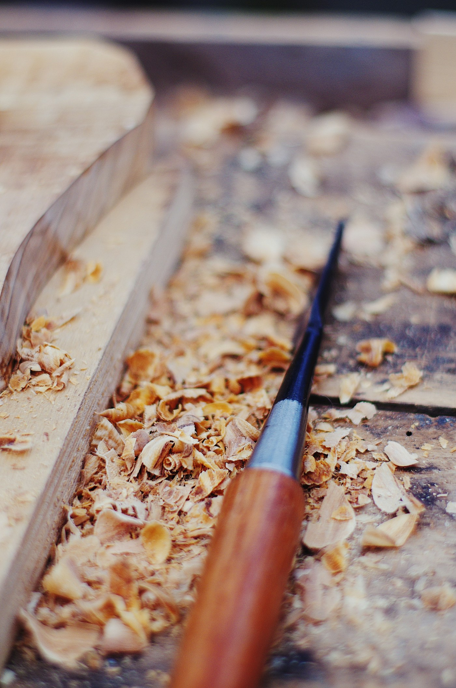
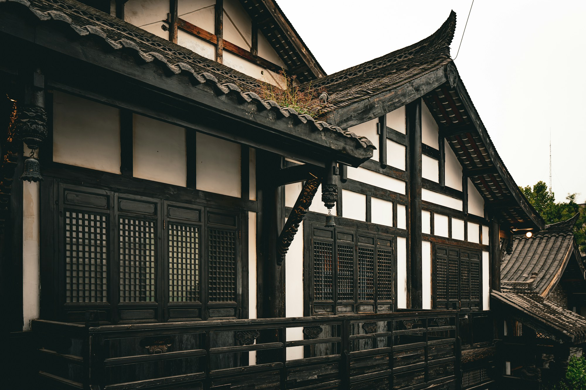
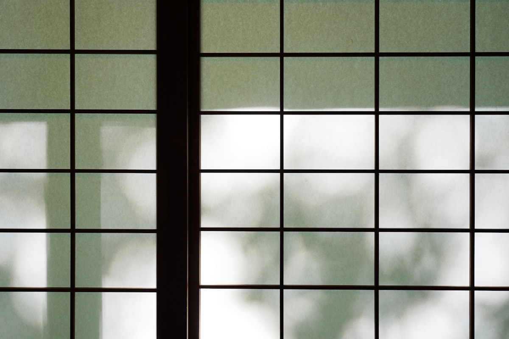
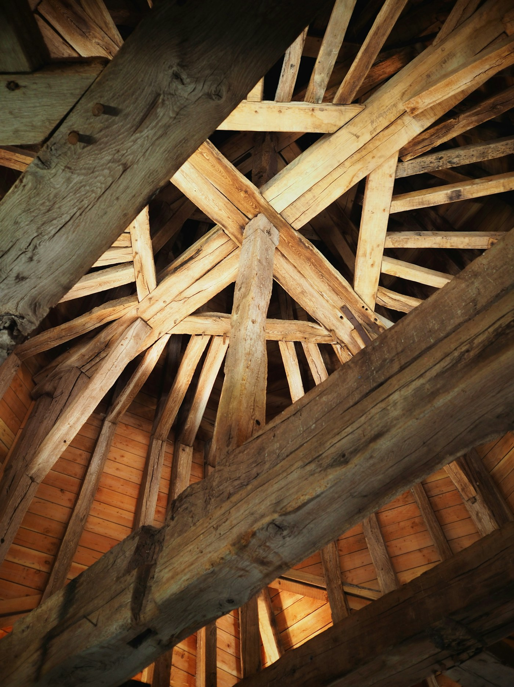
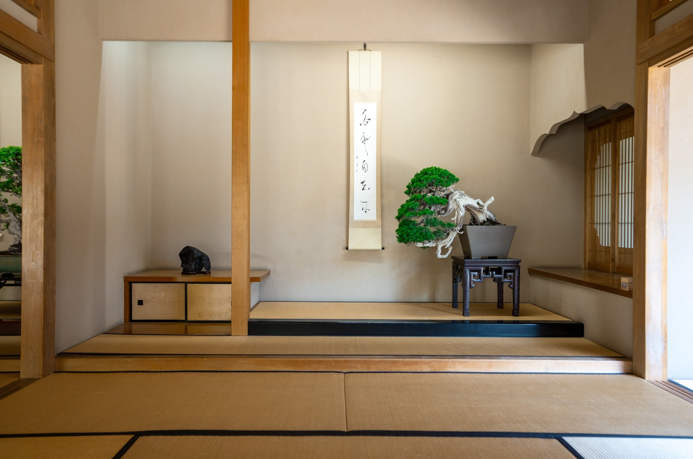
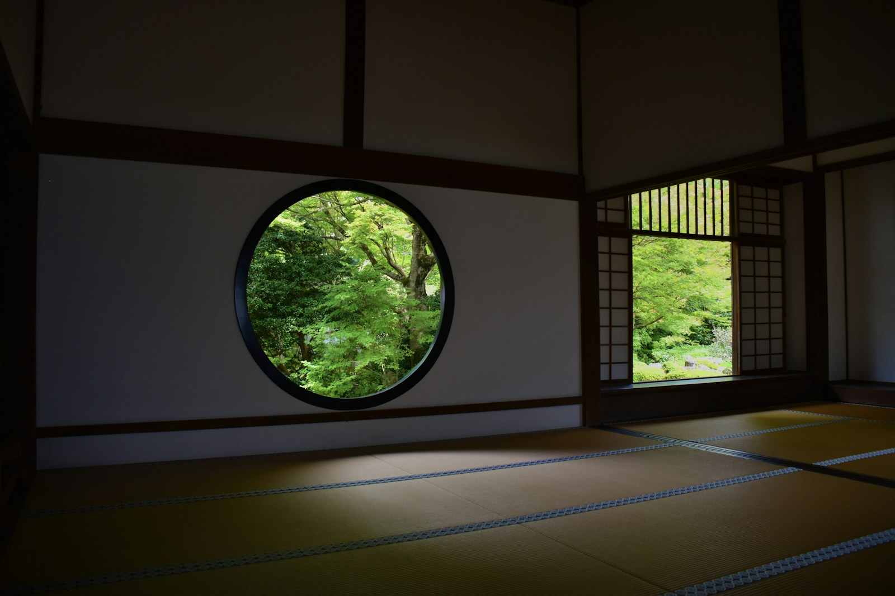
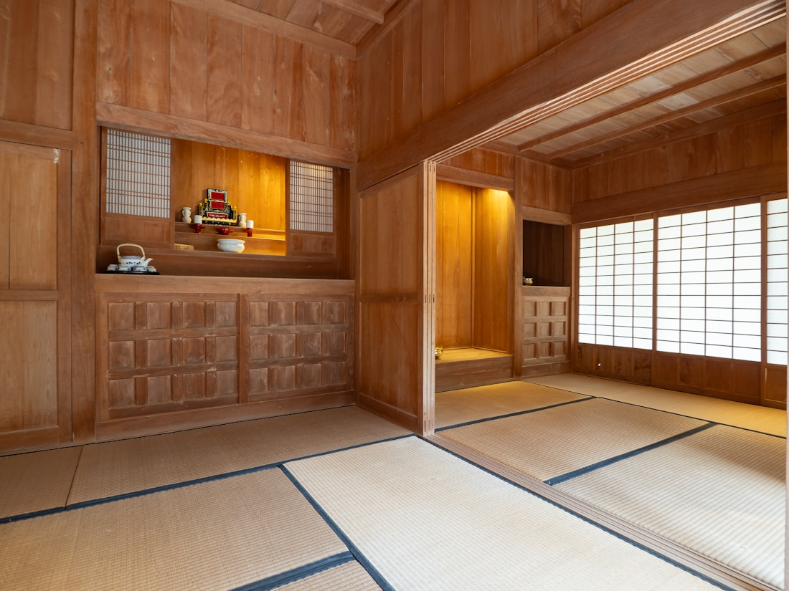
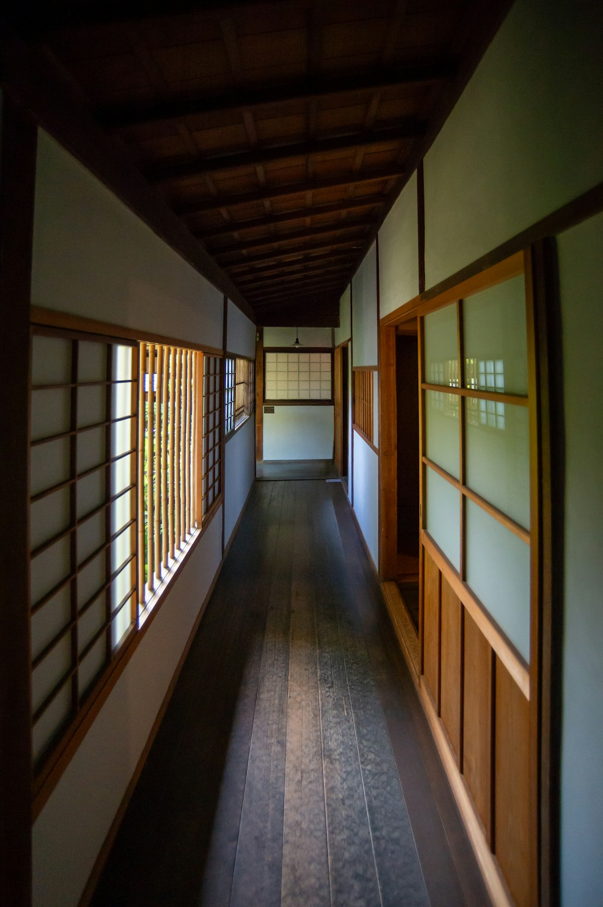
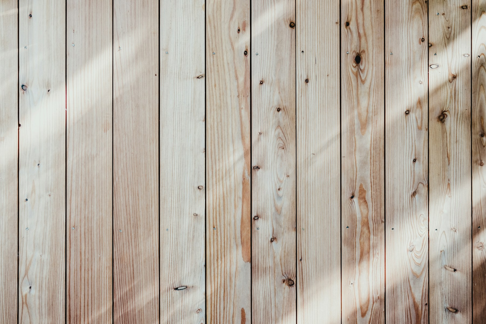
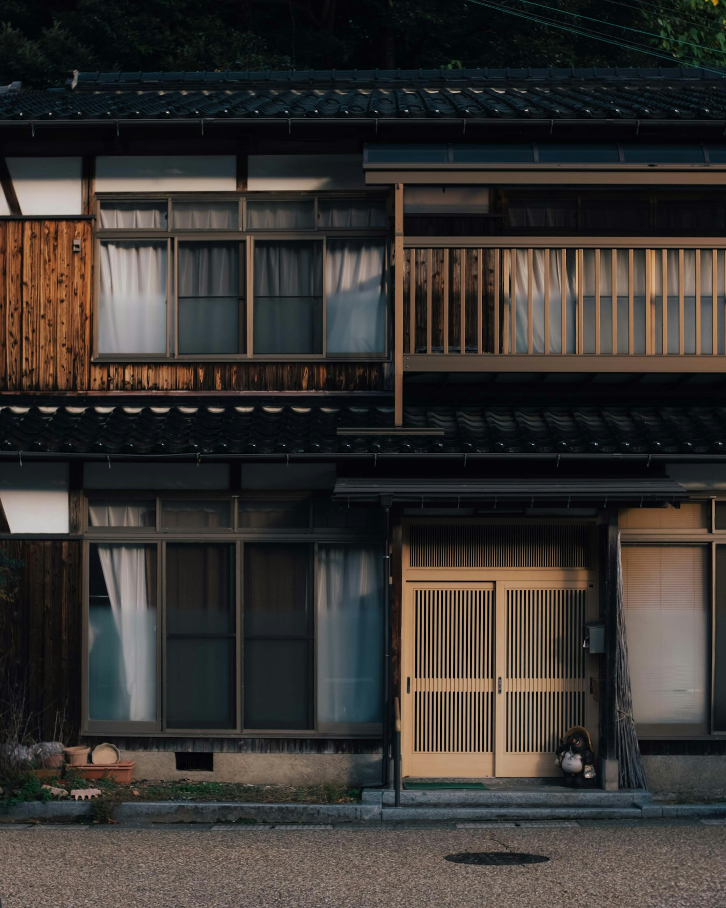

〇一
木は、山を見てから選ぶ
使うのは兵庫県北部と京都丹波の杉と檜だけです。製材所まで足を運び、丸太の状態から見て仕入れます。乾燥は時間のかかる天然乾燥を基本とし、木の粘りを落としません。
デザインサンプル（架空の工務店） 実在する会社・施工実績ではありません。写真はイメージです。

木庭工務店
KOBA KOUMUTEN ／ 古民家再生・自然素材の家
は じ め に
古い家には、その土地の気候に合わせて選ばれた木と、それを組んだ手の跡が残っています。私たちの仕事は、それを新しく作り直すことではありません。まだ働ける柱を見極め、傷んだところだけを入れ替え、次の百年へ渡すことです。
断熱も水回りも、今の暮らしに合わせて手を入れます。古さを我慢して住む家ではなく、古いからこそ心地よい家をつくります。

三 つ の 約 束

〇一
使うのは兵庫県北部と京都丹波の杉と檜だけです。製材所まで足を運び、丸太の状態から見て仕入れます。乾燥は時間のかかる天然乾燥を基本とし、木の粘りを落としません。

〇二
梁と梁のつなぎは、木を刻んで組む継手で納めます。手間はかかりますが、地震のときに力を逃がすのは、固めた金物ではなく粘る木の組み方です。刻みはすべて自社の作業場で行います。

〇三
引き渡しで終わりにしません。建てた大工が年に一度うかがい、建具の調整や木の痩せを直します。自然素材の家は、手を入れながら住むほど落ち着いていきます。
仕 事 の 記 録

丸窓の座敷
築92年・全面改修／庭に開く丸窓を新設

板張りの居間
築64年・部分改修／床下断熱と床暖房

南北に抜ける廊下
築78年・全面改修／建具はすべて再生

合板を一枚も使わない、
という選び方があります。
壁は漆喰と土、床は無垢の杉、断熱材は木の繊維。接着剤を使う建材を避けると、工期は伸びて費用も上がります。それでも選ぶのは、この家に三十年後も住んでいる人がいるからです。素材の名前と産地は、すべて見積書に書いて出します。
家 づ く り の 流 れ
図面がなくても構いません。床下と小屋裏を見れば、直すべきところと残せるところがおおよそ分かります。この調査に費用はいただきません。
調査から二週間ほどで、工事の範囲と概算費用をまとめます。この時点で見送られても構いません。
間取りを決めながら、同時に木を押さえます。天然乾燥の材は待ちが出るため、設計と並行して動きます。
全面改修でおよそ六か月から十か月。工事中はいつでも現場に入っていただけます。
写真では分からない、木の匂いと足触りを確かめてください。改修前の家もご案内できます。売り込みはいたしません。
見学会に申し込む※ これはデザインサンプルです。実際には申し込めません。

会 社 概 要